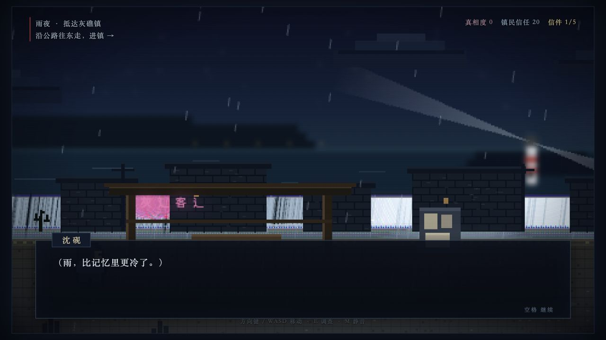

Personal Site / System Online
把产品判断写进 PRD，也把系统跑进引擎。这里不是一份向下堆叠的简历，而是一套可以选择、试玩和验证的项目档案。
01 / Project Terminal
切换下方项目即可查看定位与核心结果，详细系统、数值和职责拆解放在各自的独立页面。
Selected File
Godot 4 · 卡牌回合 RPG · Product Owner
围绕 3 AP 速度行动战斗，连接角色收集、编队共鸣、养成和 28 节点关卡，并给出移动端性能与配置规范。
02 / Operating System
产品判断、系统设计和技术验证不是三套分离能力，而是一条从问题到可玩结果的连续链路。
用户分层、竞品差异、MVP 范围、优先级与数据指标，先明确为什么做以及首版做到哪里。
战斗、养成、任务、关卡、奖励循环与数值曲线，定义状态、规则、输入输出和容错。
Godot、Unity、React、JSON 配置、存档与移动端适配，用原型和引擎验证关键假设。
03 / Latest Build

2026.07 / Playable
从叙事结构继续走到可操作场景，验证对话、调查、变量和分支如何共同控制悬疑节奏。